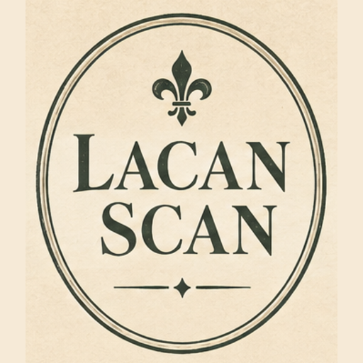
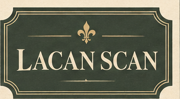

Install the GitHub Action
Preferred path for repositories on GitHub. Marketplace listing: lacan-scan. Coding agents: follow install-action.md and write the file below to .github/workflows/lacan.yml without inventing another Action name.
- Create
.github/workflows/lacan.yml. - Paste the workflow from workflows/lacan.yml (shown below).
- Commit and merge. Keep
permissions.security-events: writeso SARIF can upload. - Confirm the run under Actions, then Security → Code scanning (category
lacan).

- uses: jose-compu/lacan-scan@v7
with:
path: .
fail-on: HIGH
output: sarif,cli
sarif-file: lacan.sarif
version: "7"
changed-only: ${{ github.event_name == 'pull_request' }}
changed-base: ${{ github.event.pull_request.base.sha }}
- uses: github/codeql-action/upload-sarif@v4
if: always() && hashFiles('lacan.sarif') != ''
with:
sarif_file: lacan.sarif
category: lacanFull workflow (including on:, permissions, and checkout with fetch-depth: 0): workflows/lacan.yml. Pin Action @v7 and binary version: "7" (or "7.2.0" for a fixed artifact). Earlier rule lines remain on @v1–@v6. Skip a false positive with .lacan.toml or # lacan:skip=AIS008:reason. Experimental rules report and never fail the job.

Install the CLI
Package name on crates.io is lacan-scan. The binary is lacan.
cargo install lacan-scan --locked
lacan --version
lacan scan . --fail-on HIGHOr download lacan-<triple>.tar.gz from Releases, verify the .sha256, and put lacan on your PATH. Source builds need Crisp 1.11.1+.
CLI usage
lacan scan . --fail-on HIGH --output cli,sarif
lacan scan . --changed-only origin/main --fail-on HIGH
lacan scan . --skip-rules AIS102Optional hook: scripts/pre-commit-lacan.sh (requires lacan on PATH). Drop .lacan.toml in the repo to skip rules or paths.
v7 detectors
| Rule | Severity | Detects |
|---|---|---|
AIS301 | HIGH | Same Python or TypeScript function: an LLM value reaches eval, exec, or a shell. Parsing is this check only. |
AIS002 | CRITICAL, experimental | Untrusted CI input reaches an AI step in a job with secrets or write permissions (never fails the job) |
AIS104 | MEDIUM, experimental | Retrieved or user data reaches a system prompt in the same function (never fails the job) |
v6 detectors
| Rule | Severity | Detects |
|---|---|---|
AIS208 | MEDIUM, experimental | Backdoor n-gram triggers in labelled datasets (never fails the job) |
AIS209 | LOW, experimental | Safety-stripping / obedience fine-tune phrasing (never fails the job) |
AIS210 | MEDIUM | Scripts that harvest model outputs at scale (distillation / logits) |
AIS304 | MEDIUM | Logprobs/logits exposed without an obvious rate limit |
AIS107 | HIGH, experimental | Content-dependent chat template (fuel-capped render) |
AIS110 | MEDIUM, experimental | RAG corpus text addressed to the model |
AIS205 | HIGH, experimental | Malformed safetensors header |
AIS206 | MEDIUM, experimental | Broken GGUF header; embedded chat template checked as AIS106 |
AIS207 | HIGH, experimental | NumPy object arrays, joblib, Keras Lambda |
AIS211 | MEDIUM, experimental | Localized safetensors tensor change |
Release lines
| Major | Action | Highlights |
|---|---|---|
| v7 | @v7 | 7.2.0 experimental AIS104; 7.2.0 experimental AIS002; 7.0.0 AIS301 flow |
| v6 | @v6 | 6.1.0 adds experimental AIS107, AIS110, AIS205–207, AIS211; 6.0.0 shipped AIS208–210, AIS304 |
| v5 | @v5 | AIS106 / AIS108 / AIS109; crates.io lacan-scan |
| v4 | @v4 | .lacan.toml and inline skip comments |
| v3 | @v3 | Changed-only PR scans, pre-commit helper |
| v2 | @v2 | AIS105, AIS204, AIS401, AIS504 |
| v1 | @v1 | Core detectors, SARIF Action |